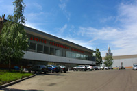

Плавательный бассейн ЦСКА
Где находится: Ленинградский проспект, 39
Как добраться: станции метро «Аэропорт», «Динамо», троллейбус №12, 70 до остановки «Улица Константина Симонова» [карта]
Контакт: +7 (495) 613-2583
+7 (495) 613-6907
Чем знаменит: Построен в 1954 году при непосредственной помощи Василия Сталина. Кстати, одна из сцен телесериала «Московская сага» с участием сына вождя и его возлюбленной Капы снята именно в интерьере армейского бассейна.
Под сводами здания расположена ванна стандартной длины (50 метров) с наклонным дном. С того торца, где глубина больше, расположены трамплины (1 и 3 метра) и вышки (5, 7 и 10 метров) для прыгунов в воду. Кроме того, для представителей этого вида спорта имеется тренажерный зал, где «ныряльщики» при помощи специальных лонж и ям с поролоном на суше шлифуют технику акробатических композиций.
В ширину бассейн чуть меньше принятых стандартов: здесь умещаются лишь восемь плавательных дорожек, тогда как по международным требованиям должно быть минимум девять, а лучше десять.
В армейском бассейне занимались настоящие звезды прошлого: Галина Прозуменщикова (до сих пор работает здесь инструктором по обучению плаванию), Елена Вайцеховская, Марина Бабкова. Нынче тренируются Дмитрий Саутин, Глеб Гальперин.
В СДЮШОР по плаванию занимаются около 300 воспитанников, с которыми работают более двадцати опытных наставников высшей категории. Занятия идут циклами, начиная с групп начального обучения.
Квалификация и личные качества тренеров гарантируют индивидуальный подход к каждому ребенку, делающему первые шаги (или гребки?) в бассейне, будь то лягушатник или основная ванна.
Несмотря на то, что выпускниками армейского бассейна являются многие мастера прыжков в воду прошлого и настоящего, специальных групп подготовки азам «дайвинга» здесь нет. Отбор желающих испытать прелесть полета над водной поверхностью с трамплина или вышки ведется из ребят, посещающих группы по плаванию.
За дополнительной информацией можно обращаться по телефонам:
(495) 613-25-83
(495) 613-29-09
×
Плавательный бассейн ЦСКА
|
|
Легкоатлетическо-футбольный комплекс ЦСКА
Где находится: Ленинградский проспект, 39
Как добраться: станции метро «Аэропорт», «Динамо», троллейбус №12, 70 до остановки «Улица Константина Симонова» [карта]
Контакт: +7 (495) 613-1807
Чем знаменит: Этот спорткомплекс, сданный в эксплуатацию в ноябре 1979 года, – одно из самых грандиозных специализированных сооружений российской столицы. Впечатляет ЛФК прежде всего своими размерами: 318 метров в длину, 190 – в ширину, 21 – в высоту. Хотя чему тут удивляться: когда под одной крышей соседствуют футбольное поле практически стандартных размеров и просторный манеж для легкоатлетических экзерсисов, меньшими параметрами никак не обойтись. Тем более что здесь же нашлось место еще для двух залов – художественной гимнастики и мини-футбола.
Во время московской Олимпиады ЛФК с блеском доказал свою многофункциональность. В легкоатлетическом манеже проходили соревнования по вольной и классической (или, по-современному, греко-римской) борьбе, а в футбольной половине спорткомплекса разыгрывали медали фехтовальщики.
В 2003 году после ремонта легкоатлетического ядра часть ЛФК, обозначенная литерой «Л», заметно похорошела. Уложенное здесь современное покрытие MONDO позволяет проводить соревнования не только всероссийского, но и международного ранга. Такие, например, как «Русская зима», «Звезды XXI века», «Кубок надежды». Шесть двухсотметровых и восемь спринтерских дорожек, две ямы для прыжков в высоту и с шестом, две – для прыжков тройным и в длину, сектор для толкания ядра способствуют одновременному проведению соревнований по восьми видам легкоатлетической программы. А когда на трибунах, вмещающих 4000 зрителей, аншлаг, то громогласная поддержка спортсменам обеспечена.
Футбольная составляющая ЛФК по физическим параметрам – сестра-двойняшка легкоатлетической. Данные идентичны: 126 метров в длину, 62 – в ширину, 14,6 – в высоту. Да и болельщиков на трибунах те же четыре тысячи может уместиться. Но и отличия, конечно, имеются. Все-таки футбол – не легкая атлетика, хотя оба и претендуют в спорте на королевские титулы соответственно мужского и женского рода.
Так вот, искусственный газон футбольного манежа помнит официальные матчи союзного чемпионата, проводившиеся в середине 80-х годов под крышей в холодное время года – ранней весной и поздней осенью. В наши дни под крышей ЛФК проводятся такие турниры, как Кубок чемпионов Содружества, Кубок Федерации, всероссийские соревнования среди воспитанников СДЮШОР.
Гостили в футбольном манеже и другие виды спорта: гимнастки-«художницы» разыгрывали здесь медали чемпионата страны, стрелки оспаривали награды чемпионата Европы по стрельбе из пневматического оружия, а мастера клинка выявляли сильнейших на международном турнире «Московская сабля».
Впрочем, художественная гимнастика в ЛФК давно уже не на правах гостя. У юных спортсменок и их наставниц здесь имеется свой зал (размеры 45х18х7,6), успешно работает СДЮШОР.
По соседству – еще один спортзал (45х24х7,6), в котором раньше занималась гандбольная команда, а теперь квартируют мини-футболисты. Кроме того, две мини-футбольных площадки и семь теннисных кортов волшебным образом появляются на месте большого искусственного газона в дни, когда футбольных баталий под крышей ЛФК нет.
В целом за сутки пропускная способность спорткомплекса составляет более 500 человек: 300 занимаются в легкоатлетическом манеже и более 200 – в футбольном.
×
Легкоатлетическо-футбольный комплекс ЦСКА
|
|
Универсальный спортивный комплекс ЦСКА
Где находится: Ленинградский проспект, 39
Как добраться: станции метро «Аэропорт», «Динамо», троллейбус №12, 70 до остановки «Улица Константина Симонова» [карта]
Контакт: +7(495)613-7812;
+7(495)613-7979
Чем знаменит: Этот спорткомплекс, сданный в эксплуатацию в ноябре 1979 года, – одно из самых грандиозных специализированных сооружений российской столицы. Впечатляет ЛФК прежде всего своими размерами: 318 метров в длину, 190 – в ширину, 21 – в высоту. Хотя чему тут удивляться: когда под одной крышей соседствуют футбольное поле практически стандартных размеров и просторный манеж для легкоатлетических экзерсисов, меньшими параметрами никак не обойтись. Тем более что здесь же нашлось место еще для двух залов – художественной гимнастики и мини-футбола.
Во время московской Олимпиады ЛФК с блеском доказал свою многофункциональность. В легкоатлетическом манеже проходили соревнования по вольной и классической (или, по-современному, греко-римской) борьбе, а в футбольной половине спорткомплекса разыгрывали медали фехтовальщики.
В 2003 году после ремонта легкоатлетического ядра часть ЛФК, обозначенная литерой «Л», заметно похорошела. Уложенное здесь современное покрытие MONDO позволяет проводить соревнования не только всероссийского, но и международного ранга. Такие, например, как «Русская зима», «Звезды XXI века», «Кубок надежды». Шесть двухсотметровых и восемь спринтерских дорожек, две ямы для прыжков в высоту и с шестом, две – для прыжков тройным и в длину, сектор для толкания ядра способствуют одновременному проведению соревнований по восьми видам легкоатлетической программы. А когда на трибунах, вмещающих 4000 зрителей, аншлаг, то громогласная поддержка спортсменам обеспечена.
Футбольная составляющая ЛФК по физическим параметрам – сестра-двойняшка легкоатлетической. Данные идентичны: 126 метров в длину, 62 – в ширину, 14,6 – в высоту. Да и болельщиков на трибунах те же четыре тысячи может уместиться. Но и отличия, конечно, имеются. Все-таки футбол – не легкая атлетика, хотя оба и претендуют в спорте на королевские титулы соответственно мужского и женского рода.
Так вот, искусственный газон футбольного манежа помнит официальные матчи союзного чемпионата, проводившиеся в середине 80-х годов под крышей в холодное время года – ранней весной и поздней осенью. В наши дни под крышей ЛФК проводятся такие турниры, как Кубок чемпионов Содружества, Кубок Федерации, всероссийские соревнования среди воспитанников СДЮШОР.
Гостили в футбольном манеже и другие виды спорта: гимнастки-«художницы» разыгрывали здесь медали чемпионата страны, стрелки оспаривали награды чемпионата Европы по стрельбе из пневматического оружия, а мастера клинка выявляли сильнейших на международном турнире «Московская сабля».
Впрочем, художественная гимнастика в ЛФК давно уже не на правах гостя. У юных спортсменок и их наставниц здесь имеется свой зал (размеры 45х18х7,6), успешно работает СДЮШОР.
По соседству – еще один спортзал (45х24х7,6), в котором раньше занималась гандбольная команда, а теперь квартируют мини-футболисты. Кроме того, две мини-футбольных площадки и семь теннисных кортов волшебным образом появляются на месте большого искусственного газона в дни, когда футбольных баталий под крышей ЛФК нет.
В целом за сутки пропускная способность спорткомплекса составляет более 500 человек: 300 занимаются в легкоатлетическом манеже и более 200 – в футбольном.
×
Универсальный спортивный комплекс ЦСКА
|
| |
Универсальный спортивный зал ЦСКА
Где находится: Ленинградский проспект, 39
Как добраться: станции метро «Аэропорт», «Динамо», троллейбус №12, 70 до остановки «Улица Константина Симонова» [карта]
Контакт: +7(495)613-25-63
В отличие от остальных спортивных армейских объектов, УСЗ не может похвастаться десятилетиями истории. Он был построен только в 2008 году и, по возрастным меркам всех близлежащих зданий ЦСКА, он просто младенец. Однако, хотя молодость и не может похвастать тем, что и кого уже повидала за многолетний опыт, она имеет свои преимущества. Так Универсальный Спортивный игровой Комплекс значительно выделяется на фоне «мастодонтов» спортивной истории ЦСКА современной, легкой архитектурой, а своим оснащением и продуманностью, пожалуй, может даже дать фору некоторым из них. В нем одном на площади 7,559 м2 удобно разместились и спортивная арена на 1100 посадочных мест с размером поля 44 х 24 м, и тренировочный зал размером 31,6 х 18 м, и тренажерный зал, оборудованный современной техникой, и кафе на 80 посадочных мест. Для удобства спортсменов в УСК предусмотрительно разместили 10 раздевалок на 300 мест, а также помещения для судейской бригады. Проведение таких соревнований, как первенства по баскетболу, мини-футболу, волейболу и бальным танцам и единоборствам делает возможным современное паркетное покрытие залов, а также наличие съемного покрытия «Taraflex Sport М», предназначенного специально для ног волейболистов. Более того, каждое мероприятие в УСК может с легкостью превратиться в праздник благодаря системам теле и радиотрансляции, которыми он оборудован.
Спорткомплекс открыт для проведения различного рода спортивных мероприятий любого уровня вплоть до европейского и мирового, а также для проведения мероприятий корпоративного толка.
×
Универсальный спортивный зал ЦСКА
|
|
Гимнастический зал ЦСКА
Где находится: Ленинградский проспект, 39
Как добраться: станции метро «Аэропорт», «Динамо», троллейбус №12, 70 до остановки «Улица Константина Симонова» [карта]
Контакт: +7(495)613-7590
Чем знаменит: Здание, в котором располагается армейский гимнастический зал, – самое пожилое из всех спортивных объектов ЦСКА на Ленинградском проспекте. Более того, первые два десятка лет своего существования оно не имело никакого отношения к спорту. Ведь построенный в 1935 году самолетный ангар принадлежал военному аэродрому, причем поговаривают, что в нем даже квартировал личный воздушный транспорт самого Василия Сталина.
Затем на некоторое время сюда перевели и разместили автомотокоманду. И только после реконструкции в 1958 году сооружение преобразовалось в гимнастический зал.
В 60-е годы минувшего века этот зал стал тренировочной базой не только для армейских спортсменов, но и для гимнастической сборной СССР. Для того времени он был превосходно оборудован и фактически являлся лучшим специализированным спортсооружением в стране. Здесь же зарождались многие передовые технологии в спортивной гимнастике.
Вот, например, гимнастические ямы. В 1972 году Международная федерация спортивной гимнастики (ФИЖ) собиралась наложить вето на изобретенное знаменитой Ольгой Корбут сальто, расценивая его как слишком рискованный элемент. Однако представителям ФИЖ под сводами армейского зала продемонстрировали, что сальто Корбут совершенно спокойно могут выполнять даже маленькие детишки, мягко приземлявшиеся в те самые ямы. Вопрос был снят. После чего технологическая новинка благополучно внедрилась в мировую гимнастическую практику.
Столь мощный материально-технический базис стал основой для бурного прогресса советских гимнастов. В 70-80-е годы их выступление на международной арене напоминало бразильскую футбольную экспансию. Если слегка перекроить афоризм южноамериканских кудесников мяча, то получится: мы завоюем столько медалей, сколько захотим, а вы – сколько мы позволим. Именно так выступали знаменитые воспитанники армейской гимнастической школы: чемпионы и призеры Олимпийских игр Дмитрий Билозерчев, Елена Шевченко, Валерий Беленький, абсолютные чемпионки мира Елена Мухина и Ольга Бичерова…
Но, к сожалению, в середине 90-х годов прошлого века армейский зал, морально устаревший и порядком обветшавший, застрял на обочине мировой гимнастики. В то время как по всему земному шару появлялись современные специализированные центры. В которые к тому же переманивали лучших российских специалистов. Пострадала от утечки тренерских кадров и армейская школа спортивной гимнастики…
Сегодня 19 группах гимнастической школы ЦСКА занимаются 184 человека, а еще две сотни детей посещают абонементные группы. В феврале 1981 года было создано отделение художественной гимнастики (ныне 72 воспитанницы занимаются в 8 группах плюс 100 человек по абонементам). Правда, по большей части «художницы» все-таки тренируются в легкоатлетическо-футбольном комплексе ЦСКА, где условия для них более подходящие.
×
Гимнастический зал ЦСКА
|
|
Дворец спортивных единоборств ЦСКА
Где находится: Ленинградский проспект, 39
Как добраться: станции метро «Аэропорт», «Динамо», троллейбус №12, 70 до остановки «Улица Константина Симонова» [карта]
Контакт: +7 (495) 613-6556
Чем знаменит: Жаботинский, Власов, Шарий, Куренцов… Все эти великие штангисты не раз и не два выходили на помост армейского Дворца тяжелой атлетики. Именно так называлось построенное в 1971 году сооружение, ныне имеющее другую вывеску: Дворец спортивных единоборств (ДСЕ).
Впрочем, вне зависимости от названия, этот спортивный объект всегда отличался универсальностью и весьма широким спектром прописавшихся здесь видов спорта. Так, в свое время соседями хозяев-штангистов были борцы вольного, классического (ныне – греко-римского) стилей, дзюдоисты и самбисты. Затем сюда же перебрались и фехтовальщики. А когда просторный зал на первом этаже после ухода тяжелоатлетов перешел во владение баскетбольного ЦСКА во главе с великим Александром Гомельским (случилось это в середине 70-х годов минувшего столетия), ничья посторонняя нога не ступала на занятую Папой и его подопечными территорию.
К московской Олимпиаде баскетболисты получили УСК, но даже после этого один из самых популярных игровых видов спорта какое-то время сохранял прописку во Дворце – благодаря армейским баскетболисткам. Затем команда распалась, но эстафету игровых дисциплин в ДСЕ (это название было утверждено в начале 90-х годов) подхватили волейболисты с волейболистками. Женская команда ЦСКА по волейболу и по сей день проводит здесь официальные домашние матчи российского чемпионата.
И все же главные обитатели этого спортивного объекта, конечно же, единоборцы. Сейчас в шести залах занимаются представители вольной и греко-римской борьбы, бокса, мужского и женского дзюдо, самбо, фехтования. Весьма кстати пришлось открытие в декабре 2005 года еще одного дворца, расположенного по соседству с ДСЕ. В нем – два основных зала, отлично оборудованных и отданных в распоряжение кикбоксеров и тхэквандистов.
ДСЕ старается шагать в ногу со спортивно-техническим прогрессом. Например, в 1998 году накануне юношеских игр здесь смонтировали новую радиоаппаратуру. Свою миссию она выполнила как следует и теперь уступила место новой акустической системе. А заодно во Дворце обновили и сигнализацию.
Модернизация коснулась также игрового зала. Там перестелили паркет, что само по себе удовольствие весьма дорогое. На очереди – обновление осветительной системы. Чуть раньше отремонтировали зал фехтования, установили электронное оборудование, не уступающее лучшим европейским стандартам. А дзюдоистов обеспечили двумя новыми татами.
Так что в ДСЕ есть все возможности для воспитания новых Михайлиных, Колобковых, Гацаловых, Лебзяков и Коробовых…
×

Дворец спортивных единоборств ЦСКА
|
| |
Дворец тенниса ЦСКА
Где находится: Ленинградский проспект, 39
Как добраться: станции метро «Аэропорт», «Динамо», троллейбус №12, 70 до остановки «Улица Константина Симонова» [карта]
Контакт: +7 (495) 613-6527
Чем знаменит: Для подавляющего большинства отечественных болельщиков форпостом российского тенниса является спорткомплекс «Олимпийский». Однако лучшим специализированным сооружением не только в Москве, но и в России можно признать Дворец тенниса ЦСКА. Этот уникальный спортивный объект был сдан в эксплуатацию в 1966 году и, как утверждают, возводился по спецпроекту под патронатом тогдашнего министра обороны СССР Андрея Гречко.
Сферическая конструкция перекрытий Дворца позволила поднять потолок на высоту 17 метров – достаточно для крученых и не очень «свечей», постоянно «зажигаемых» теннисистами на корте. Впрочем, и без «свечей» здесь светло: тщательно продуманная система освещения подобрана настолько удачно, что электрические лампы ни под каким углом зрения не слепят игроков, а, напротив, равномерно насыщают зал светом.
Покрытие всех трех кортов Дворца (двух основных и одного тренировочного) с течением времени менялось, чтобы не отставать от технической эволюции в мировом теннисе. В 1966 году в качестве основы здесь была постелена палуба из сибирской ели – аналогичный вечный фундамент заложен на полотне олимпийского велотрека в Крылатском. А уже поверх этой основы в теннисном Дворце укладывали различные ковры, отвечавшие последнему слову техники.
Довольно долго – более 20 лет – нескольким поколениям теннисистов прослужил «коврик» шведского производства. В 90-х годах минувшего столетия все больше турниров в мире стало проводиться на «суприме», и в 1996-м такое покрытие уложили в армейском теннисном Дворце. Прослужило оно верой и правдой вплоть до 2003 года, когда был закуплен и постелен ковер нового поколения – «тарафлекс».
Отчасти техническое переоборудование было связано с тем, что традиционный Кубок Кремля проводился именно на этом покрытии. А поскольку многие российские теннисисты готовились к этому турниру в том числе и в армейском Дворце, было принято решение создать для них максимально благоприятные условия.
Сегодня «тарафлекс» еще не вышел из теннисной моды, однако на подачу уже выходит очередная новинка. Федерация тенниса России совместно с хорватской фирмой разработали новое покрытие под названием «рукорт». По техническим характеристикам оно мало чем отличается от «тарафлекса», но дешевле его на 30 процентов. Руководители отечественного тенниса активно продвигают новинку, предлагая теннисным центрам по всей стране закупать и укладывать новое покрытие. Весьма вероятно, что в скором времени и на кортах во Дворце тенниса ЦСКА будет уложен «рукорт».
А пока и «тарафлекс» здесь не лежит без дела. Ежедневно по 14-16 часов на нем идут тренировки и соревнования самого разного масштаба. Например, три года назад Дворец принимал полуфинальный этап Кубка Европы для юношей до 14 лет.
А в 2004-м здесь прошел взрослый чемпионат России с участием многих наших теннисных звезд. Так что армейский Дворец может гордиться тем, что на его корты в разное время выходили Елена Дементьева, Елена Лиховцева, Вера Звонарева, Надежда Петрова, Евгений Кафельников, Марат Сафин, Андрей Черкасов, Андрей Чесноков. Помнят здесь и знаменитостей из более отдаленного прошлого – Андрея Ольховского, Константина Пугаева, Евгению Манюкову, Наталью Звереву, Ольгу Морозову и Шамиля Тарпищева. Кстати, в ноябре под сводами Дворца тенниса ЦСКА регулярно проводится турнир для юношей и девушек до 18 лет и для мальчиков и девочек до 12 лет на призы Манюковой и Ольховского.
В детско-юношеской школе ЦСКА, чьи воспитанники осваивают азы владения ракеткой на кортах теннисного Дворца, занимаются около 300 мальчишек и девчонок. А команда СДЮШОР постоянно выступает во всевозможных турнирах, наверняка мечтая когда-нибудь выиграть для России очередной Кубок Дэвиса.
×
Дворец тенниса ЦСКА
|
|
Конноспортивная база ЦСКА
Где находится: ул. Дыбенко, 5
Как добраться: станция метро «Речной вокзал», автобусы №188, 200, 673, 739, 745
Контакт: +7 (495) 451-07-05
Чем знаменита: Армейская конноспортивная база (КСБ) построена к Олимпиаде-80 и рассчитана на 150 голов. И только наполовину она занята постоянными обитателями, принадлежащими государству. Остальные 75 мест предоставляются для аренды частным лицам, содержащим здесь своих лошадей.
На манеже размером 40х80 метров (есть еще предманежник с вдвое меньшими габаритами) занимаются 18 юных воспитанников армейской детско-юношеской школы. Летом или в хорошую погоду зимой (когда грунт не покрыт коркой наста) есть возможность проводить тренировки на так называемом боевом поле или плацу (общая площадь – 8 га) под открытым небом.
Кроме того, в здании КСБ имеется зал, в котором размещаются две тренировочные волейбольные площадки, легко трансформирующиеся в одну игровую. Здесь квартирует армейская волейбольная СДЮШОР, насчитывающая около 80 спортсменов. А в подвальном помещении, ранее оборудованном под стрелковый тир, теперь тренируются ребята из детско-юношеской школы тхэквандо.
В разные годы своих лошадей на манеж КСБ выводили мастера спорта международного класса подполковник Эдуард Тикот и Татьяна Слепцова.
Стоит отметить, что конному спорту, как и любви, все возрасты покорны. Не случайно в этом виде спорта есть лишь одно разграничение по количеству прожитых лет – до 18 или старше. Поэтому на крупнейших соревнованиях, вплоть до Олимпийских игр, можно увидеть всадников весьма почтенного возраста, которым далеко за 60.
У лошадей же свои категории. Бывает, что некоторые жеребцы уже в семилетнем возрасте с успехом выступают на международных турнирах. Однако самый продуктивный с точки зрения достижения результатов возраст для лошади – от 9 до 24 лет. Если, конечно, удастся обойтись без серьезных травм и тяжелых болезней.
×
Конноспортивная база ЦСКА
|
|
Универсальная спортивная база «Песчаное»
Где находится: ул. 3-я Песчаная, 2
Как добраться: станция метро «Сокол», троллейбус №6 или станция метро «Полежаевская», троллейбус №43 до остановки «Песчаная площадь»
Контакт: +7 (499) 157-7591,
+7 (499) 157-7048
Чем знаменита: Построена в 1961 году. На четырнадцати гектарах земли расположены два тренировочных футбольных поля с искусственным газоном и десять теннисных кортов - 4 крытых и 6 открытых. В прошлом году на тех шести кортах, которые находятся под открытым небом, покрытие было заменено на hard. А под крышей уложили taraflex.
Все без исключения корты отданы под тренировки ребятни из теннисной школы ЦСКА. Именно «Песчаное» выбрали для тренировок в Москве Марат Сафин и Елена Дементьева.
Что касается футбольных полей, то раньше на одном из них тренировался и даже проводил домашние матчи чемпионата России ПФК ЦСКА. Но с тех пор как футболисты переехали на другую армейскую базу - «Ватутинки», здесь тренируется дублирующий состав команды. Весной 2007-го на территории «Песчаного» был заложен первый камень нового стадиона ЦСКА. Планируется, что уже в 2009 году армейские футболисты смогут играть здесь. Помимо дубля на обоих полях занимаются воспитанники СДЮШОР по футболу.
×
Универсальная спортивная база «Песчаное»
|
| |
Учебно-спортивная база «Ватутинки»
Где находится: Московская область, Ленинский район, пос. Ватутинки
Как добраться: на автомобиле - 35 км Калужского шоссе, поворот налево, далее по указателям, или станция метро "Теплый стан", автобусы № 531, 512, 515, 508 до остановки «35-й км»
Контакт: +7 (495) 549-5290
Чем знаменита: Прежде в этом местечке в южном Подмосковье располагались воинские части, а потому и постройки здесь были соответствующего предназначения. Преображение началось в 1977 году, когда по соседству с казармами поставили котельную, а вскоре пробурили скважину и построили столовую. В 1983 году военные приоритеты в Ватутинках окончательно сменились на спортивные: в строй официально вступила Учебно-спортивная база.
Теперь на участке земли площадью 21 га располагаются бассейн с 25-метровыми дорожками, гимнастический зал, пять спальных корпусов и даже конюшня. Которая, правда, пустует. Но главная гордость и достопримечательность «Ватутинок» – футбольные поля. Их здесь четыре: три – стандартных размеров (два из них с натуральным покрытием, одно – с искусственным) и еще одно – маленькое, для тренировок юных футболистов. Газон на нем тоже искусственный.
С 2003 года футбольные поля в Ватутинках востребованы по самому высшему разряду, после того как сюда со спортбазы в Архангельском перебрался коллектив ПФК ЦСКА. Переезд на новое место жительства оказался счастливым: с тех пор армейские футболисты трижды стали чемпионами страны и выиграли Кубок УЕФА.
Армейский футбольный клуб отремонтировал столовую, два спальных корпуса, а бывшее танковое хранилище превратилось в комфортабельный игровой зал.
И все же УСБ «Ватутинки» – это родной дом не только для футболистов. В одном из корпусов постоянно живут юные гимнасты, приехавшие из разных уголков России, и их наставники, сплошь умудренные опытом и увенчанные званиями заслуженных тренеров России. Достаточно сказать, что под их руководством в стенах здешнего гимнастического зала выросли такие звезды армейского спорта, как олимпийская чемпионка Атланты-96 Роза Галиева и победительница Игр-2000 в Сиднее Светлана Хоркина. Так что можно с полным правом сказать, что спортивная гимнастика – второй основной профиль «Ватутинок».
Кроме того, в игровом зале часто занимаются ребята из армейской баскетбольной школы, на сборы приезжают волейболистки и мини-футболисты.
×
Учебно-спортивная база «Ватутинки»
|
|
Спортивная горнолыжная база «Крылатские холмы»
Где находится: Рублевское шоссе, 24, корп.5
Как добраться: станции метро «Кунцевская», автобусы №688, 733 до остановки «Магазин Ежик».
Контакт: +7(495) 415-4015
Чем знаменита: В начале нынешнего столетия в лесной массив, расположенный в Филевском парке столицы, пожаловала высокая комиссия. Президент России Владимир Путин вместе с начальником генерального штаба Вооруженных Сил Анатолием Квашниным, тщательно проинспектировав склон одного из холмов, пришли к выводу: горнолыжной трассе и базе здесь – быть!
Так в 2002 году на месте, где раньше располагалась военная часть и постройки Академии бронетанковых войск, появился спортивный объект для занятий горнолыжным спортом. Строилась база, можно сказать, всем армейским миром: здание возводилось под патронатом Московского военного округа, а, например, подъемники для горнолыжных трасс находились в ведении военных летчиков.
В первом призыве созданной при базе детско-юношеской спортшколы было всего 30 воспитанников, с которыми занимался один-единственный тренер. Сейчас в школе насчитывается более 300 спортсменов и семь наставников.
К их услугам – две трассы длиной 250 и 300 метров, три подъемника (два по 250 метров и один – 100 метров), ратрак (специальный трактор, утрамбовывающий снег на трассах) и две снежные «пушки», распыляющие искусственный снежный покров по склону при отсутствии естественного.
Впрочем, и «пушки» оказываются бессильны, если температура воздуха не опускается ниже нулевой отметки. При устойчивом же «минусе» снежного «заряда» вполне хватает для спуска с горки на лыжах.
Учитывая весьма короткую длину обеих трасс, о скоростных дисциплинах горнолыжного спорта здесь говорить неуместно. Поэтому воспитанники детско-юношеской школы и взрослые любители катания с гор специализируются исключительно на технических видах, то есть на слаломе. Система искусственного освещения позволяет проводить занятия и в темное время суток.
×
Спортивная горнолыжная база «Крылатские холмы»
|
|
Стрелковый тир ЦСКА
Где находится: Комсомольский проспект, 17а.
Как добраться: станция метро «Фрунзенская», далее пешком.
Контакт: +7 (495) 693-0209;
+7 (495) 693-0210
Чем знаменит: Зданию, в котором располагается армейский стрелковый тир, даже не сто лет – гораздо больше. Построено оно было в 1860 году, то есть за год до отмены крепостного права в России. За сотню лет его стены много чего перевидали, но доподлинно известно, что одно время здесь были конюшни, и в стойлах отдыхали и мирно жевали сено не простые лошадки, а кони легендарного Семёна Михайловича Будённого. Однако в 1962 году двухэтажный особнячок был подвергнут реконструкции, после чего сюда «вселился» стрелковый тир ЦСКА, проживающий по этому адресу и по сей день.
Тир представляет собой шесть стрелковых галерей: четыре комбинированные и две – десятиметровые. Комбинированные позволяют вести стрельбу с дистанций 50, 25 и 10 метров. В тире регулярно проводятся тренировки и соревнования, как минимум всероссийского, ранга по всем видам пулевой стрельбы.
Неудивительно, что завсегдатаями этого спортсооружения являются звезды стрелкового спорта - Артём Хаджибеков, Михаил Неструев, Татьяна Голдобина. А вот посещение тира народным артистом Советского Союза Владимиром Меньшовым (и не просто посещение, а настоящая стрельба по мишеням!) можно отнести к приятным сюрпризам, вошедшим в историю этого армейского спортивного сооружения. Меньшов и другие гости побывали в тире 22 февраля, в рамках Открытого празднованная Дня защитника Отечества, проводившегося ЦСКА.
×
Стрелковый тир ЦСКА
|